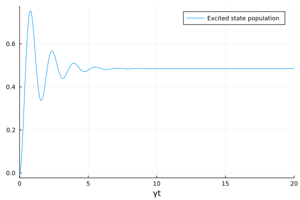
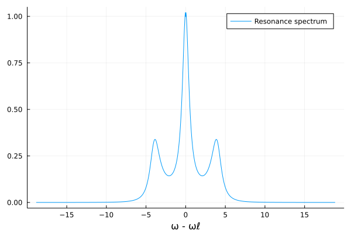

Mollow Triplet
In the following example, we show how one can compute the resonance spectrum of a single, coherently driven atom. The Hamiltonian describing the system is given by
\[H = -\Delta\sigma^{ee} + \Omega\left(\sigma^{ge} + \sigma^{eg}\right),\]
where $\Delta = \omega_\ell - \omega_a$ is the detuning between the laser and the atomic resonance frequency and $\Omega$ is the Rabi frequency of the laser. The atom is also subject to decay at rate $\gamma$ with the damping operator $\sigma^{ge} = |g\rangle \langle e |$ projecting it from the excited state $|e\rangle $ to its ground state $|g\rangle$.
using QuantumCumulants
using ModelingToolkit, OrdinaryDiffEq
using PlotsObtaining the equations of motion for the system is simple. Note that in this case, we are not actually making any assumptions: in the special case of a single atom (even if it has more than two levels), there exists a simple mapping between the equations of motions for averages and the density operator. In our case, the density operator $\rho$ is determined by only two average values, $\langle\sigma^{eg}\rangle = \rho_{eg} = \rho_{ge}^* $ and $\langle \sigma^{ee}\rangle = \rho_{ee} = 1 - \rho_{gg}$. In other words, we are solving the master equation component-wise.
# Hilbert space
h = NLevelSpace(:atom, (:g,:e))
# Operators
@cnumbers Δ Ω γ
@qnumbers σ::Transition(h)
H = Δ*σ(:e,:e) + Ω*(σ(:g,:e) + σ(:e,:g))
J = [σ(:g,:e)]
# Equations
eqs = meanfield([σ(:e,:g),σ(:e,:e)], H, J; rates=[γ])\begin{align} \frac{d}{dt} \langle {\sigma}^{{eg}}\rangle =& 1 i \Omega -0.5 \gamma \langle {\sigma}^{{eg}}\rangle + 1 i \Delta \langle {\sigma}^{{eg}}\rangle -2 i \Omega \langle {\sigma}^{{ee}}\rangle \\ \frac{d}{dt} \langle {\sigma}^{{ee}}\rangle =& 1 i \Omega \langle {\sigma}^{{ge}}\rangle -1 i \Omega \langle {\sigma}^{{eg}}\rangle -1.0 \gamma \langle {\sigma}^{{ee}}\rangle \end{align}
In order to compute the spectrum, we first need to compute the correlation function given by
\[g(\tau) = \langle \sigma^{eg}(t_0+\tau)\sigma^{ge}(t_0)\rangle \equiv \langle \sigma^{eg}\sigma^{ge}_0\rangle,\]
where $t_0$ is any time after which the original system has reached steady state. Note, that in the second step we simplified the notation by dropping the temporal arguments. The subscript $0$ indicates operators given at $t_0$.
The correlation function of the system given by eqs can be computed as follows.
# Correlation Function
c = CorrelationFunction(σ(:e,:g), σ(:g,:e), eqs; steady_state=true)Note that the above actually derives another set of equations, which might take some time. Specifically, it is deriving the equation of motion for $g(\tau)$ and automatically completes the system of equation deriving the necessary equations of motion for all average values on which $g(\tau)$ depends. Here, the system of equations reads
c.de\[\begin{align} \frac{d}{dt} \langle {\sigma}^{{eg}} {\sigma_0}^{{ge}}\rangle =& 1.0 i \langle {\sigma_0}^{{ge}}\rangle \Omega + 1.0 i \Delta \langle {\sigma}^{{eg}} {\sigma_0}^{{ge}}\rangle -2.0 i \Omega \langle {\sigma}^{{ee}} {\sigma_0}^{{ge}}\rangle -0.5 \gamma \langle {\sigma}^{{eg}} {\sigma_0}^{{ge}}\rangle \\ \frac{d}{dt} \langle {\sigma}^{{ee}} {\sigma_0}^{{ge}}\rangle =& -1.0 i \Omega \langle {\sigma}^{{eg}} {\sigma_0}^{{ge}}\rangle + 1.0 i \Omega \langle {\sigma}^{{ge}} {\sigma_0}^{{ge}}\rangle -1.0 \gamma \langle {\sigma}^{{ee}} {\sigma_0}^{{ge}}\rangle \\ \frac{d}{dt} \langle {\sigma}^{{ge}} {\sigma_0}^{{ge}}\rangle =& -1.0 i \langle {\sigma_0}^{{ge}}\rangle \Omega -1.0 i \Delta \langle {\sigma}^{{ge}} {\sigma_0}^{{ge}}\rangle + 2.0 i \Omega \langle {\sigma}^{{ee}} {\sigma_0}^{{ge}}\rangle -0.5 \gamma \langle {\sigma}^{{ge}} {\sigma_0}^{{ge}}\rangle \end{align}\]
As mentioned above, to compute the time evolution of the system itself, we are effectively solving a master equation. One way to obtain the spectrum would be to solve the system in order to obtain the time evolution of the correlation function, and then take the Fourier transform. However, a computationally more efficient way is to take the Laplace transform of the correlation function directly, which yields a simple linear system of equations. Then we only have to compute a matrix inverse instead of the time evolution to obtain the spectrum.
In the following, we will use the latter approach:
ps = (Δ,Ω,γ)
S = Spectrum(c,ps)\[\mathcal{F}(\langle {σ}^{{eg}} {σ_0}^{{ge}}\rangle )(\omega)\]
Constructing the Spectrum from the correlation function, automatically derives a matrix $A$ and a vector $b$ determining the set of linear equations
\[A(\omega)x(\omega) = b(\omega),\]
where the spectrum is then given by the first entry of the solution vector, $S(\omega)=x_1(\omega)$.
To find the spectrum, we first need to compute the time evolution of the system up to steady state.
@named sys = ODESystem(eqs)
p0 = (0.0,2.0,1.0)
u0 = zeros(ComplexF64, 2)
prob = ODEProblem(sys,u0,(0.0,20.0),ps .=> p0)
sol = solve(prob,RK4())plot(sol, vars=((x,y)->(x,real(y)), 0, 2),xlabel="γt", label="Excited state population")┌ Warning: To maintain consistency with solution indexing, keyword argument vars will be removed in a future version. Please use keyword argument idxs instead. │ caller = ip:0x0 └ @ Core :-1

Now, solving the linear system to obtain the spectrum can simply be done by calling the instance at a range of frequencies, and providing the proper steady-state values and numerical parameters.
ω = range(-6pi,6pi,length=1001)
s = S(ω,sol.u[end],p0)
plot(ω,s,xlabel="ω - ωℓ",label="Resonance spectrum")
The resulting spectrum shows a prominent peak at the resonance point ($\omega=\omega_\ell=\omega_a$), but also two more peaks around $\omega \approx \pm \Omega^2/\gamma$. These two resonances originate from the dressed states. These three peaks are called Mollow Triplet.